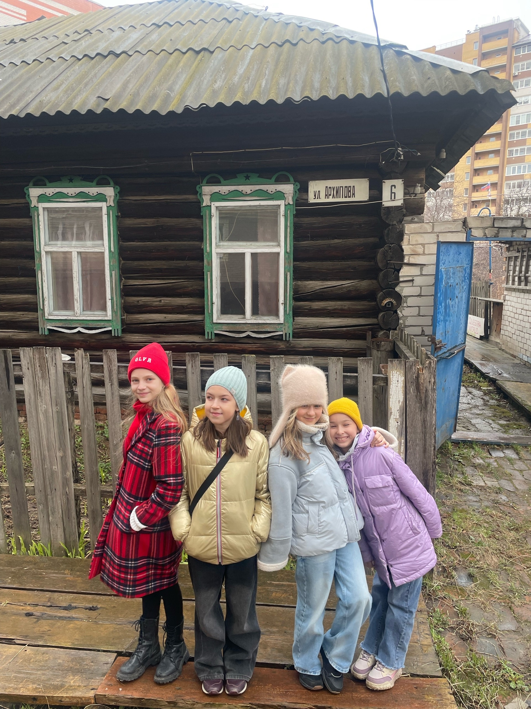
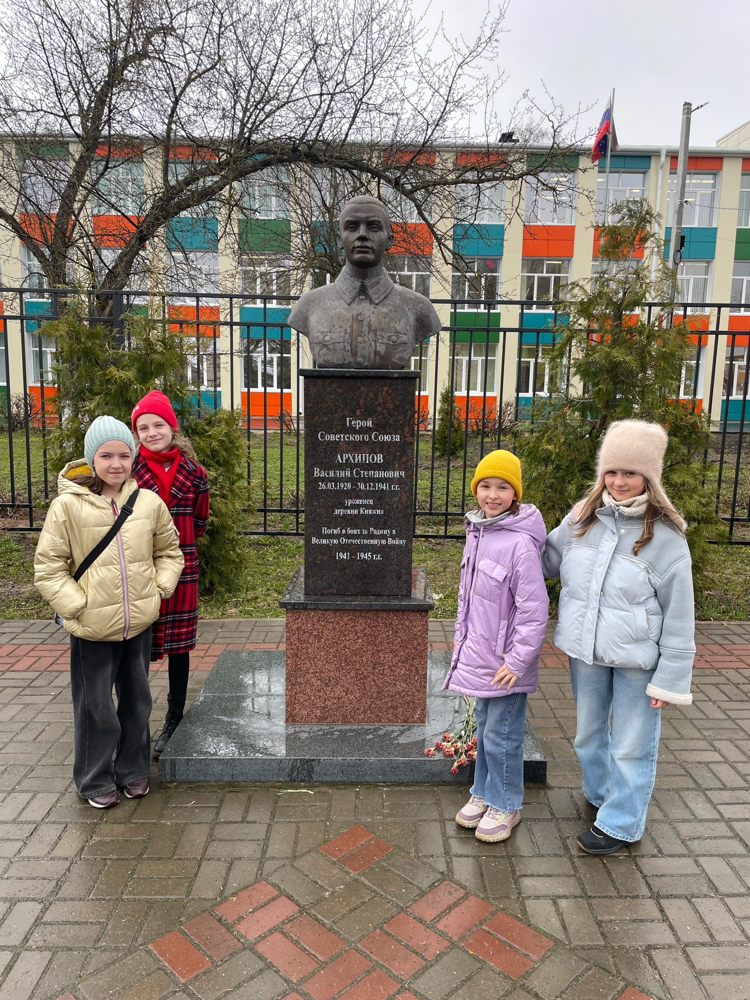
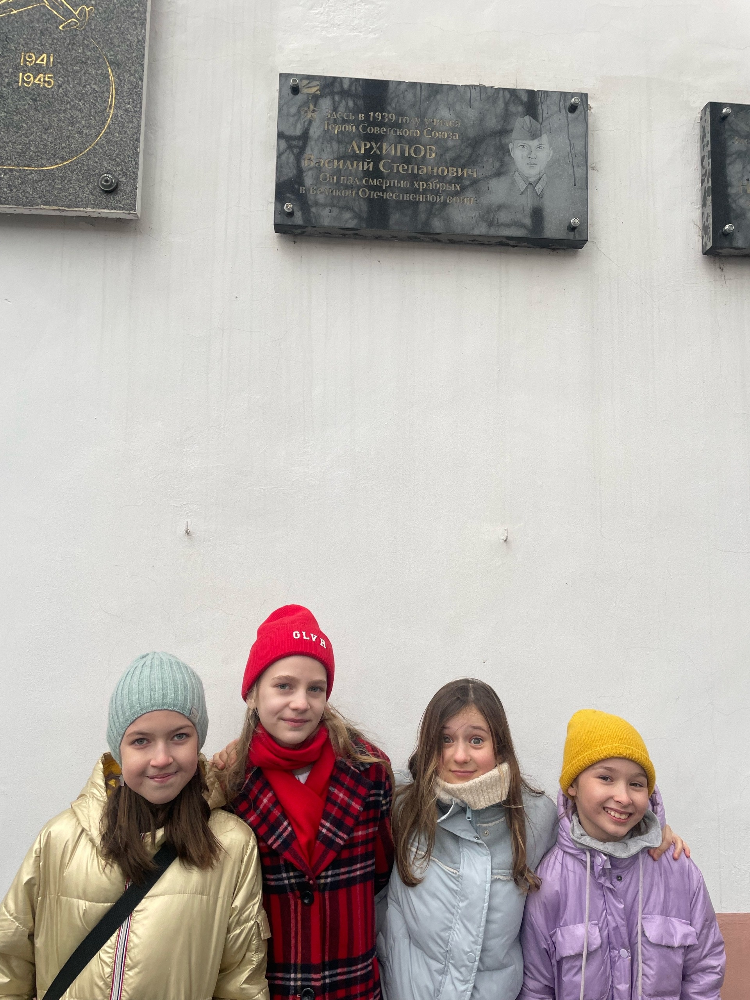
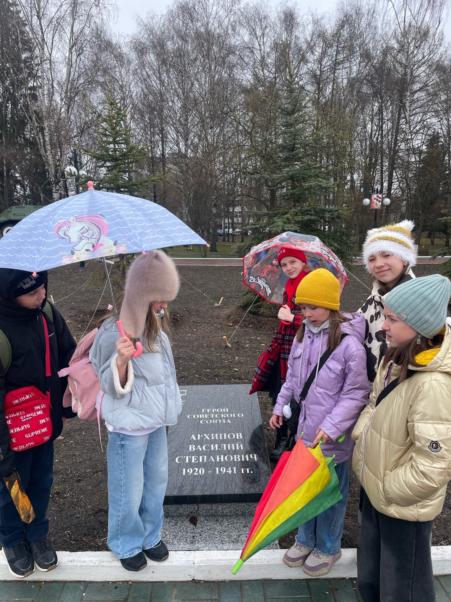

Василий Степанович Архипов стал первым уроженцем Марийского края, кто был удостоен высшего звания — Герой Советского Союза.
Он родился в 1920 году в деревне Княжна Царевококшайского уезда (сегодня это деревня Данилово в черте города Йошкар-Ола) в простой крестьянской семье.
После окончания школы поступил и впоследствии закончил педагогическое училище в селе Кузнецово (сейчас – Медведевский район). В 1939 г. поступил в Марийский педагогический институт имени Крупской.
В 1939 г. в возрасте девятнадцати лет Василия Степановича Архипова призвали в Советскую армию. Он прошел Советско-финскую войну и с сентября 1941 года стал участником Великой Отечественной войны.
Василий Архипов был командиром пулеметного расчета кавалерийского эскадрона.
В кругу военных друзей Василий был жизнерадостным, веселым, щедро делился своим опытом, полученным на финском фронте. В критический момент на него всегда можно было положиться.
Героический подвиг Василий Архипов совершил 30 декабря 1941 года. В этот день кавалеристы вышли к деревне Ямны Калужской области и в результате боя с врагами освободили деревню. Однако фашисты поднялись в контратаку. Бой длился целый день с переменным успехом.
Василий Архипов прикрывал левый фланг своего подразделения, сумел уничтожить несколько десятков фашистов. Когда его окружили враги, он предпочел смерть, совершив самоубийство, нежели сдаться в плен, до последнего продолжая стрелять по приближающимся противникам.
Упоминания о Василии Степановиче Архипове в Йошкар-Оле и ее окрестностях:
1. Улица Архипова. Первый дом на улице построили в 1945 году, в 2026 г. на ней стоит всего 3 дома.



